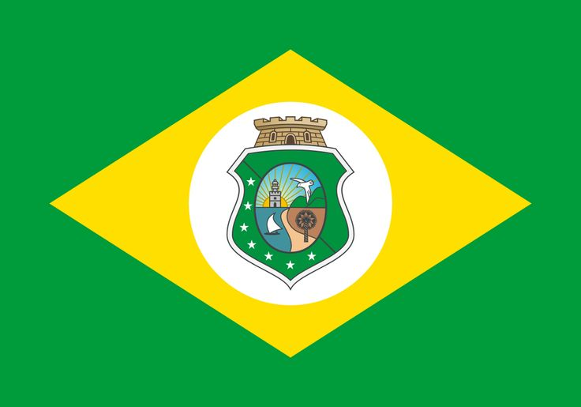

Ceará
O Ceará, um estado no nordeste do Brasil, tem um interior montanhoso e um litoral atlântico ladeado por impressionantes falésias avermelhadas. O balneário de Canoa Quebrada apresenta enormes dunas de areia rosa e a Rua Dragão do Mar, uma rua movimentada também conhecida como Broadway. A cidade isolada de Jericoacoara, cercada pelo Parque Nacional de Jericoacoara, repleto de dunas, é famosa por suas ruas de areia, windsurfe e pores do sol incomuns com tons esverdeados.

No período colonial brasileiro, o território cearense constituía a capitania hereditária do Siará. Inicialmente ela foi atribuída a Antônio Cardoso de Barros, que não se estabeleceu na área. Em 1603, Pero Coelho de Sousa explorou a região até a seca prolongada que a atingiu e teve duração de quatro anos. Foi construído, nesse período, o Forte São Thiago, posteriormente destruído em uma disputa com as populações indígenas.
Em 1612, o português conhecido como fundador do Ceará, Martim Soares Moreno, chegou ao território, construindo o Forte de São Sebastião. Além da reação das populações indígenas aos colonos portugueses, houve conflitos com os holandeses que invadiram a região.
A cidade de Fortaleza foi formada com base nos arredores do Forte Fortaleza de Nossa Senhora de Assunção (antigo São Sebastião, que estivera sob domínio dos holandeses), e oficialmente estabelecida como capital no século XVIII, em 1726.
População : 8,795 milhões (2022)
Capital : Fortaleza
Governador : Elmano de Freitas
Código ISO 3166 : BR-CE
A diversidade cultural cearense é oriunda das diferentes influências populacionais do território, sobretudo indígenas e africanas.
Além das festas folclóricas e religiosas, o artesanato constitui uma das principais expressões culturais do estado. As peças são confeccionadas do couro, da palha, do barro, da madeira, da areia colorida e de outros elementos.
literatura de cordel e as xilogravuras, feitas para representar as histórias contadas na forma de versos, são símbolos culturais da região Nordeste, incluindo o estado do Ceará. O cordel foi, inclusive, reconhecido pelo Iphan como Patrimônio Cultural Imaterial Brasileiro